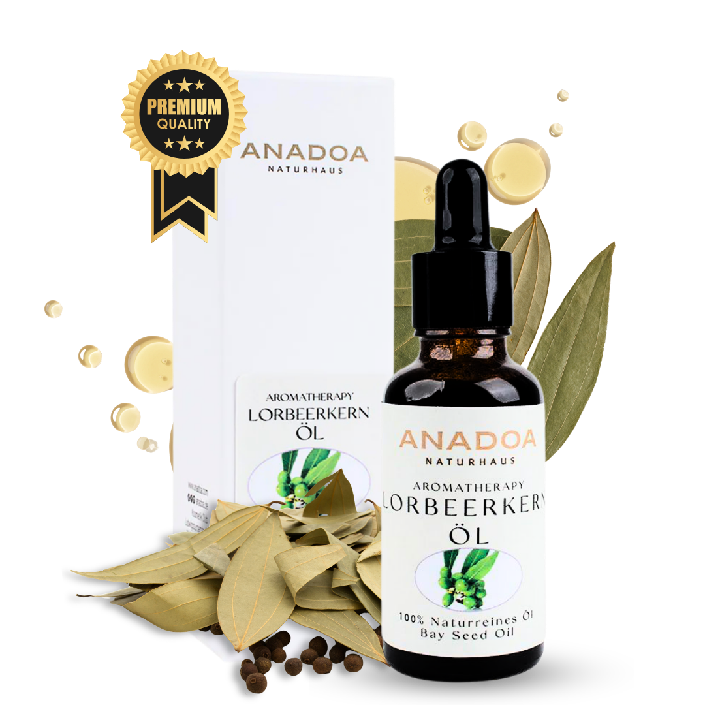
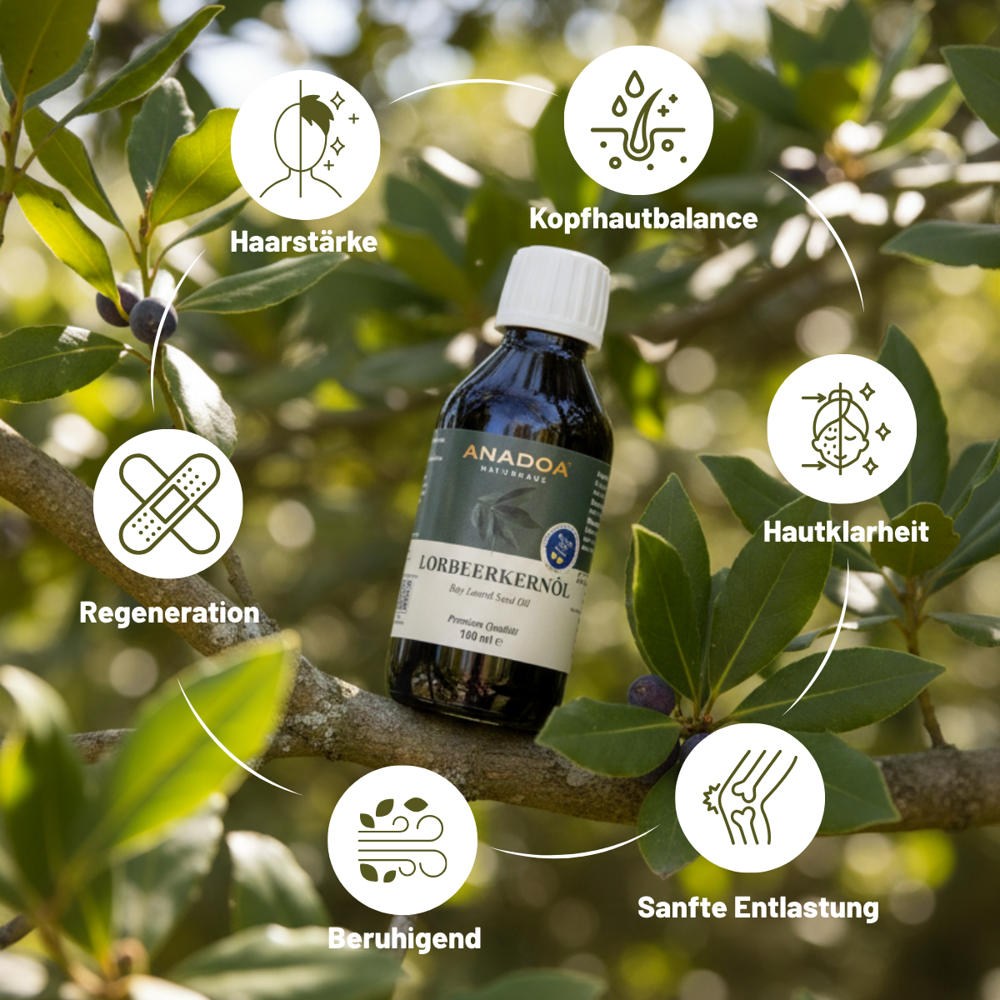

Was ist Lorbeerkernöl? (Defne Tohumu Yağı)
Lorbeerkernöl (Laurus nobilis) ist ein wahres Wunderwerk der Natur und unser absoluter Bestseller. Im Türkischen als Defne Tohumu Yağı bekannt, ist es kein klassisches, flüssiges Pflegeöl, sondern bei Raumtemperatur eine tiefgrüne, aromatische Paste, die erst bei Hautkontakt schmilzt.
Es ist die historische Seele der legendären Aleppo-Seife und vereint die rückfettenden Eigenschaften eines Basisöls mit der hochpotenten, durchblutungsfördernden Kraft ätherischer Verbindungen.
Herkunft & Botanik: Wo wächst der echte Lorbeer?
Der Edle Lorbeer (Laurus nobilis) ist ein immergrüner Strauch oder Baum, der fest in der mediterranen Kultur verwurzelt ist. Besonders die anatolische Mittelmeerregion, die Ägäis und das Levante-Gebiet (Syrien, Libanon) bieten das perfekte, sonnenverwöhnte Klima für diese antike Heilpflanze.
Schon in der Antike galt der Lorbeerkranz als Symbol für Ruhm, Gesundheit und Unsterblichkeit. In der türkischen Tradition (Defne) wächst der Lorbeer wild in den unberührten Hügellandschaften der Ägäis- und Mittelmeerküste, fernab von industrieller Landwirtschaft. Genau aus diesen sonnengereiften, wilden Beständen beziehen wir die Früchte für unser Lorbeerkernöl.
Der Unterschied: Blätter, Samen und Kerne
Lorbeer ist eine unglaublich vielseitige Pflanze, doch oft kommt es zu Verwechslungen zwischen den verschiedenen Ölen, die man aus ihr gewinnen kann:
- Lorbeerkernöl (Defne Tohumu Yağı): Dies ist unser Produkt! Es wird aus den schwarzen, olivenähnlichen Früchten (Beeren) und deren Kernen gepresst. Es ist dunkelgrün, pastös, extrem reichhaltig und enthält fettes Öl (wie Laurinsäure) gepaart mit einem natürlichen Anteil an ätherischen Stoffen. Es kann – in Salben oder stark verdünnt – direkt auf der Haut angewendet werden.
- Lorbeerblätteröl (Defne Yaprağı Yağı): Dies ist ein reines ätherisches Öl, das durch Wasserdampfdestillation aus den Blättern gewonnen wird. Es ist flüssig, klar bis gelblich und hochgradig konzentriert. Es darf niemals pur auf die Haut aufgetragen werden, sondern dient meist der Aromatherapie.
Ernte und traditionelle Herstellung
Die Ernte der Lorbeerfrüchte findet im späten Herbst (Oktober bis Dezember) statt. Die kleinen schwarzen Beeren werden oft in mühsamer Handarbeit in rauen, schwer zugänglichen Bergregionen von den Zweigen abgestreift.
Um das grüne Öl zu gewinnen, gibt es traditionell zwei Methoden: Entweder werden die Beeren sanft gepresst (Kaltpressung), oder sie werden traditionell in Wasser aufgekocht (Heißextraktion). Das grüne Fett löst sich aus den Kernen und dem Fruchtfleisch, schwimmt obenauf und wird sorgfältig abgeschöpft. Die intensive grüne Farbe stammt vom enorm hohen Chlorophyll-Gehalt der Fruchtschale.
Wirkung & Vorteile: 6 Gründe für Lorbeerkernöl
Unser Lorbeerkernöl ist ein wahrer Allrounder für Gesundheit und Pflege. Die einzigartige Kombination aus Laurinsäure, Ölsäure und natürlich vorkommenden ätherischen Verbindungen macht es so besonders.

Haarstärke
Lorbeerkernöl nährt die Haarfollikel tiefgehend. Es wird traditionell in der Türkei verwendet, um dünner werdendes Haar zu kräftigen und dem Haar natürlichen Glanz und Stabilität zurückzugeben.
Kopfhautbalance
Die stark antiseptischen Eigenschaften helfen, eine juckende, schuppige oder aus dem Gleichgewicht geratene Kopfhaut zu beruhigen. Es ist ein bewährtes Mittel bei hartnäckigen Schuppen.
Hautklarheit
Dank seiner antibakteriellen Wirkung (Laurinsäure) reinigt es die Haut tiefenwirksam. Es bekämpft Akne-Bakterien und klärt unreine Haut, ohne sie dabei auszutrocknen.
Sanfte Entlastung
Lorbeerkernöl ist stark rubefazierend (durchblutungsfördernd). Bei Verspannungen, Muskelkater oder Rheuma aufgetragen, erzeugt es eine sanfte, tiefe Wärme, die Gelenke und Muskeln entlastet.
Beruhigend
Sein extrem krautiger, würziger Duft und die entzündungshemmenden Inhaltsstoffe wirken sowohl auf gestresste Hautpartien als auch auf den Geist beruhigend und ausgleichend.
Regeneration
Der hohe Chlorophyll-Gehalt fördert die Zellerneuerung und Wundheilung. Ideal zur Pflege rissiger, beanspruchter Haut oder zur Nachbehandlung von Narben.

Qualitätsmerkmale: Wie erkennt man echtes Lorbeerkernöl?
Achten Sie auf die folgenden Eigenschaften, um reine Qualität zu erkennen:
- Konsistenz: Bei Zimmertemperatur (um 20°C) MUSS echtes Lorbeerkernöl eine feste, krümelige oder salbenartige Paste sein. Erst wenn Sie es zwischen den Fingern reiben, schmilzt es durch die Körperwärme.
- Farbe: Ein tiefes, dunkles Grün.
- Duft: Ein unverwechselbarer, unglaublich starker, krautiger und fast medizinischer Geruch.
Anwendungstipps für den Alltag
Da Lorbeerkernöl sehr potent ist, wird es selten pur für das ganze Gesicht verwendet, sondern eher lokal oder gemischt aufgetragen:
- Haar- & Kopfhautkur: Schmelzen Sie eine kleine Menge in den Händen und massieren Sie es in die Kopfhaut ein. Lassen Sie es 30 Minuten (oder über Nacht) einwirken und waschen Sie es mit einem milden Shampoo aus.
- Schmerzsalbe bei Verspannungen: Mischen Sie Lorbeerkernöl 1:1 mit einem Trägeröl (z.B. Johanniskrautöl oder Olivenöl) und massieren Sie damit steife Gelenke, den Nacken oder kalte Muskeln kräftig ein.
- Pickel-Tupfer: Geben Sie eine minimale Menge des puren Öls direkt auf entzündete Pickel, um die Bakterien gezielt zu bekämpfen.
Häufige Fragen (FAQ)
Ist Lorbeerkernöl für Allergiker geeignet?
Vorsicht! Lorbeerkernöl gehört zu den potenteren Ölen, und manche Menschen reagieren sensibel (Kontaktallergie) auf die natürlichen Inhaltsstoffe (besonders auf Sesquiterpenlactone). Testen Sie es immer zuerst auf einer kleinen Hautstelle am Unterarm (Patch-Test).
Warum ist mein Lorbeerkernöl flüssig angekommen?
Wenn das Paket im Sommer (oder in einem warmen Lieferwagen) über 30°C erreicht, schmilzt das Öl. Das ist ein Zeichen für absolute Reinheit und mindert die Qualität in keiner Weise. Stellen Sie es einfach für ein paar Stunden in den Kühlschrank, dann wird es wieder fest.
Riecht Lorbeerkernöl wie das Gewürz Lorbeer?
Ja, aber noch viel intensiver! Es hat einen extrem starken, krautigen und fast schon medizinischen Geruch. Dieser Duft ist kein Parfüm, sondern der natürliche Eigengeruch der gepressten Beeren und ein Zeichen absoluter Frische und Qualität.
Kann ich Lorbeerkernöl pur auf das ganze Gesicht auftragen?
Wir empfehlen es nicht für die tägliche Vollgesichtspflege, da es dafür oft zu stark ist und empfindliche Hautpartien (wie um die Augen) reizen könnte. Es eignet sich hervorragend als punktuelles Mittel (Spot-Treatment) gegen Pickel oder verdünnt (1:10) in einer milderen Creme oder einem Trägeröl.
Lässt sich Lorbeerkernöl leicht aus den Haaren auswaschen?
Da es sich um ein sehr reichhaltiges Fett handelt, benötigt es nach einer Kopfhautkur manchmal zwei Waschgänge mit einem milden Shampoo, um vollständig entfernt zu werden. Der leicht krautige Duft bleibt oft noch eine Weile im Haar und sorgt für ein langanhaltendes Frischegefühl auf der Kopfhaut.